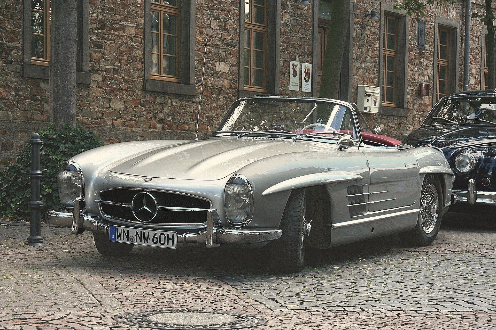
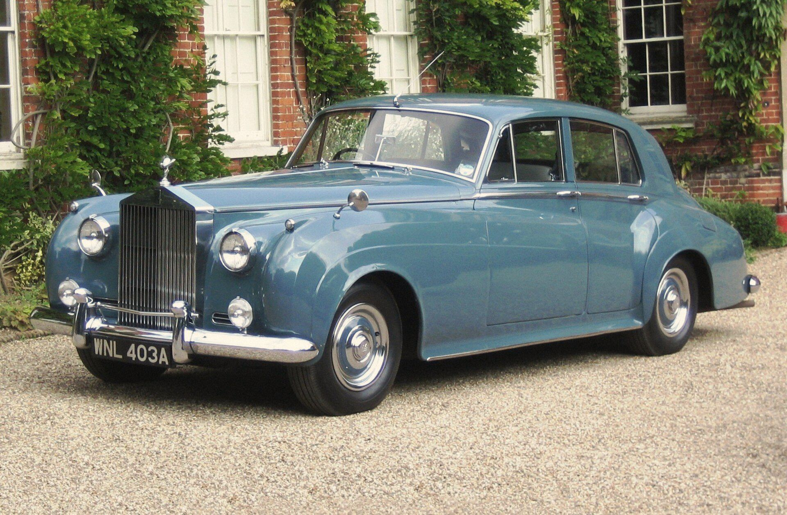
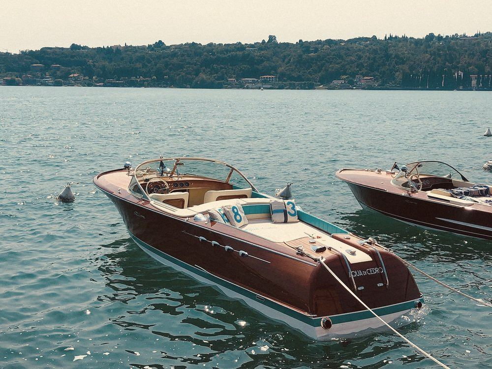
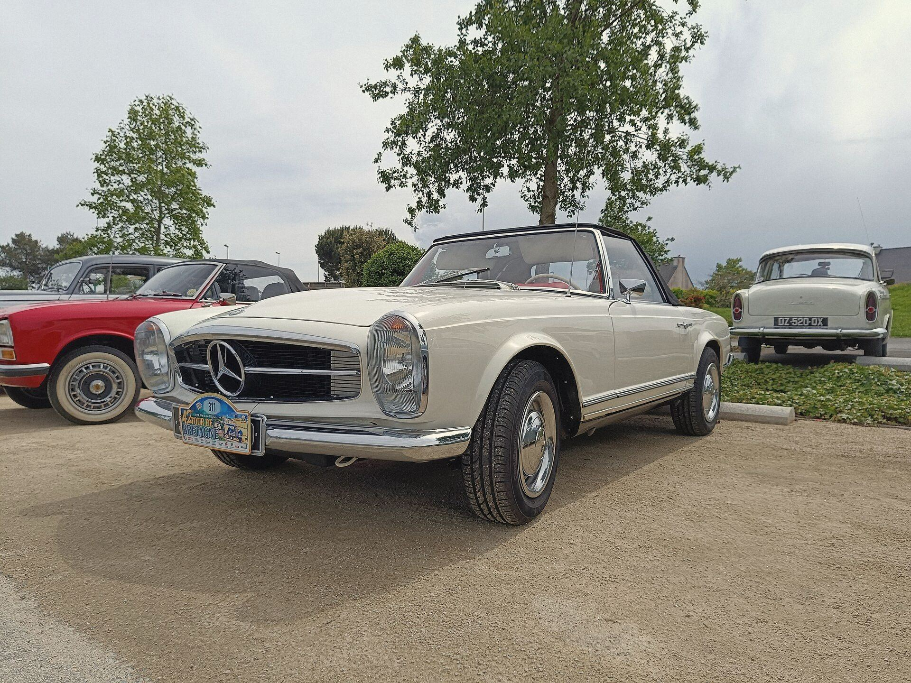
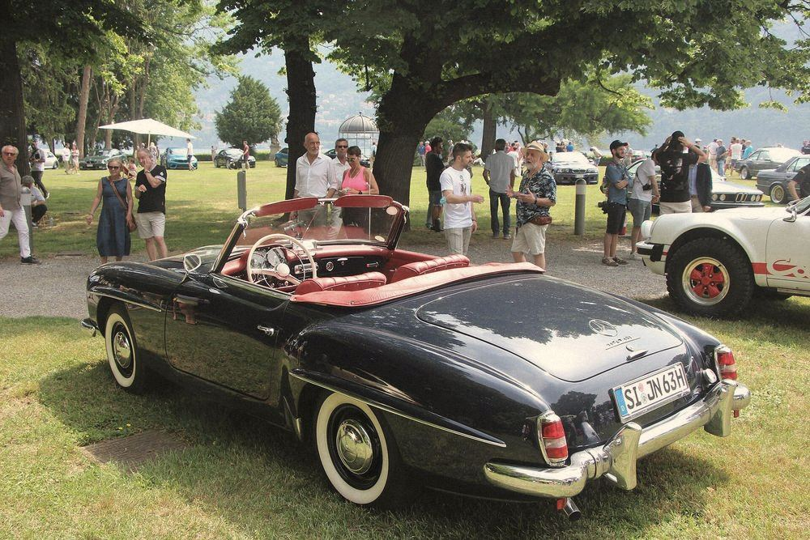
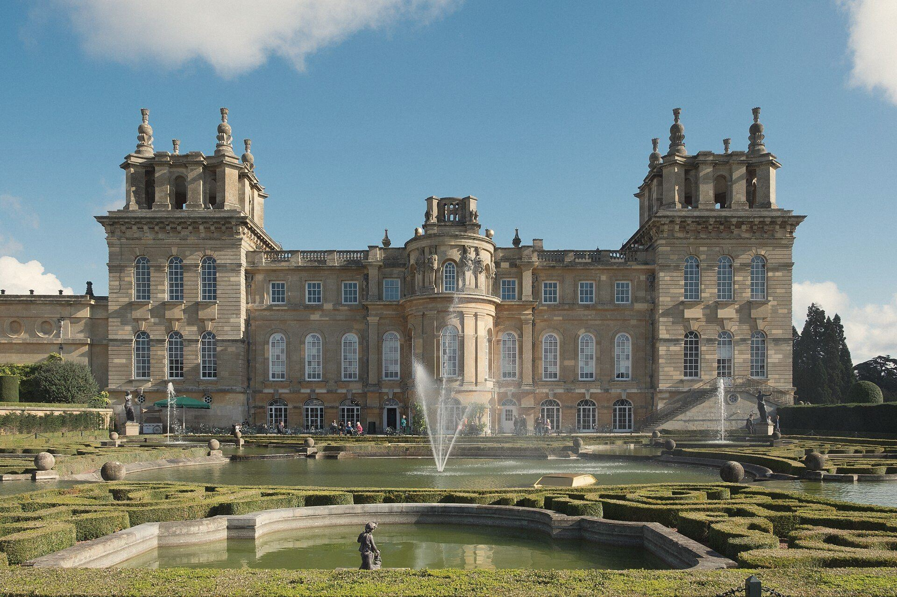
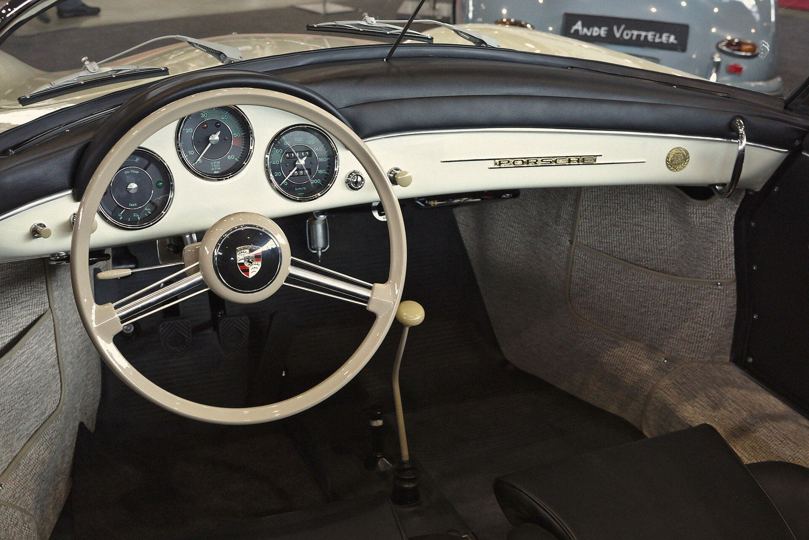
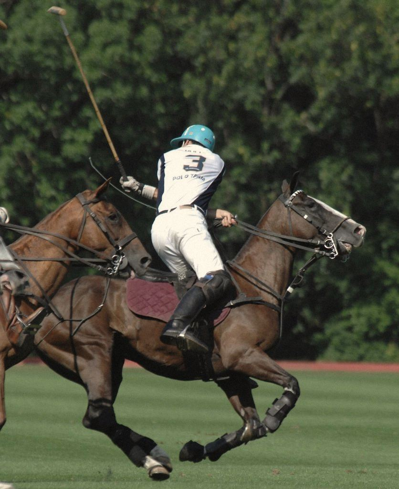
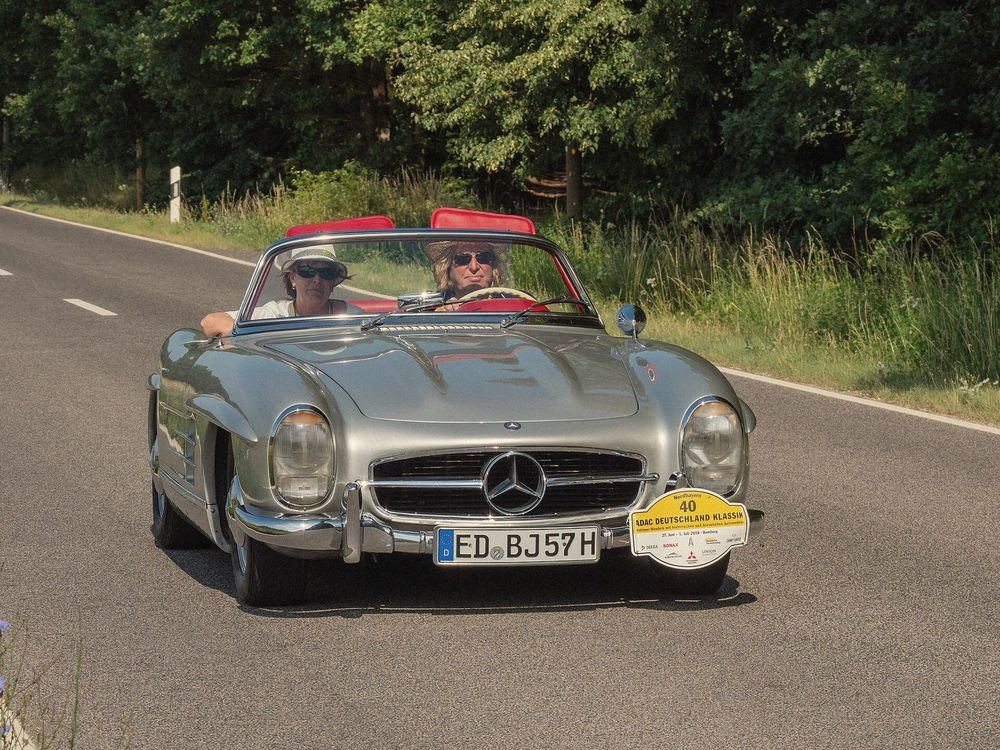

Ember
Finds backdoors hidden in Roblox free models. Reads the model file itself, no Studio needed.
Eighteen, third year at the Grafisch Lyceum Rotterdam. Online as ZetFire. I build security tools, Roblox systems and websites.

I turn questions
into working tools.
VANSTEENPAAL

Finds backdoors hidden in Roblox free models. Reads the model file itself, no Studio needed.

A voice assistant that listens, talks back and can search the web.

A dark-red interface library for Roblox with themes, configs and keybinds.

A collection of Luau scripts, organised per game and reusable features.

My GitHub front page, with an automated contribution graph.
Where school meets side projects, I learn by building things that work.
I'm Tygo. I spend most of my time on programming, cybersecurity and software that makes everyday tasks easier. Every project is public, source included.
LET'S TALK
SchoolGrafisch Lyceum Rotterdam
Third-year student at a school for design, media and technology.
FocusCybersecurity
Reading code the way an attacker writes it, then building the tool that catches it.
MethodOpen source
Every project is published with its full source, so anyone can check how it works.
ZetFireOnline name
The name on my GitHub commits and the flame in my logo.
Off hoursRotterdam
Gaming, and finding the next thing I want to understand.
People trust software before they understand it. I want to build the kind that deserves that trust.


Rotterdam